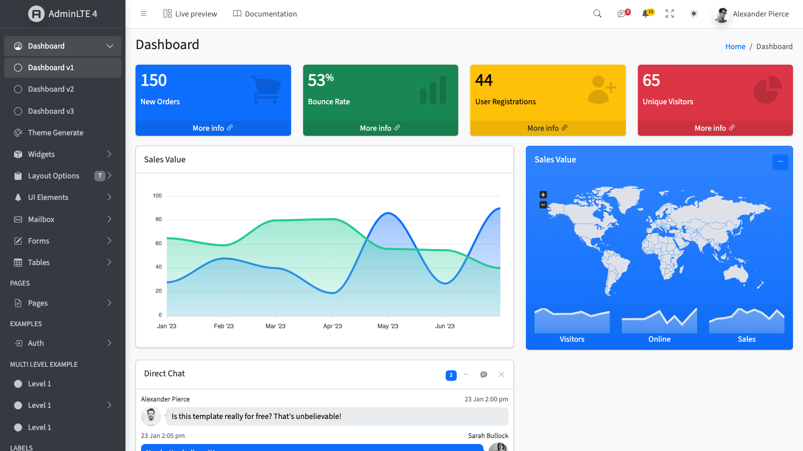
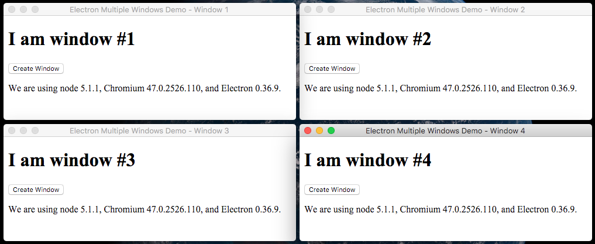
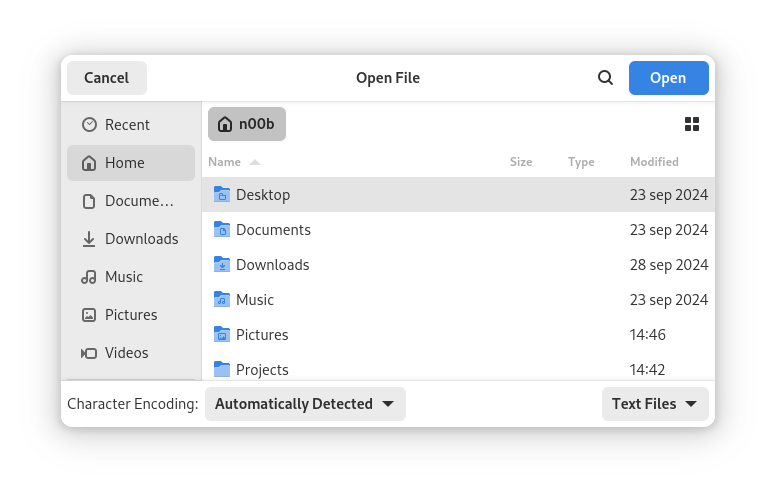

Desenvolvimento de Aplicações Desktop (DAD) — Aula 1 do 2º Semestre
A base de tudo
Variáveis com tipagem dinâmica (let/const), template strings pra montar textos dinâmicos, e estruturas condicionais (if/else, switch, ternário).
let nome = "Ana";
let idade = 22;
console.log(`Olá, ${nome}! Você tem ${idade} anos.`);
const status = idade >= 18 ? "maior de idade" : "menor de idade";As três formas de declarar funções (function statement, function expression, arrow function) e as estruturas de repetição (for, while) com break/continue.
function somar(a, b) { return a + b; }
const multiplicar = function (a, b) { return a * b; };
const dividir = (a, b) => a / b;
for (let i = 0; i < 5; i++) {
if (i === 3) continue;
console.log(i);
}Selecionar e alterar elementos HTML via JavaScript, e reagir a interações do usuário com addEventListener.
const botao = document.querySelector('#btn-salvar');
botao.addEventListener('click', () => {
const valor = document.querySelector('#input-nome').value;
document.querySelector('#resultado').textContent = `Olá, ${valor}!`;
});O padrão array de objetos como estrutura central de dados, e os métodos map (transformar) e filter (selecionar) pra trabalhar com essas listas sem loops manuais.
const produtos = [
{ nome: "Mouse", preco: 50 },
{ nome: "Teclado", preco: 120 }
];
const nomes = produtos.map(p => p.nome);
const caros = produtos.filter(p => p.preco > 60);Do Hello World aos dialogs
Todo app Electron tem um processo Main (Node.js completo) e um ou mais processos Renderer (a interface, isolada por segurança).
O preload.js usa contextBridge pra expor, com segurança, um conjunto limitado de funções do Main pro Renderer — sem dar acesso total ao Node.js.
const { contextBridge, ipcRenderer } = require('electron');
contextBridge.exposeInMainWorld('api', {
enviarMensagem: (msg) => ipcRenderer.send('mensagem', msg)
});Com invoke/handle, o Renderer pede algo ao Main e espera a resposta via Promise — o padrão que vamos reaproveitar hoje pra buscar dados do banco.
ipcMain.handle('buscar-dados', async () => {
return { ok: true, dados: [] };
});A palavra async na frente de uma função (como no async () => {...} do handle acima) indica que ela sempre retorna uma Promise, e permite usar await dentro dela para esperar operações demoradas — como uma consulta ao banco de dados — sem travar o resto do programa. Por isso quase todo handler de IPC que busca dados é async: buscar no MySQL leva um tempinho, e async/await deixa esse código de espera parecido com código síncrono, mais fácil de ler.
Usamos o Bootstrap pra montar interfaces desktop rapidamente, organizamos o projeto em pastas (main, renderer, preload) e separamos dados da lógica num arquivo JSON externo.

É exatamente esse arquivo JSON que vamos aposentar hoje, trocando por um banco de dados MySQL.
Como criar janelas filhas sincronizadas com a principal via IPC, e como integrar o app ao sistema operacional com menus nativos e um ícone na bandeja (Tray).

Os diálogos nativos do Electron — MessageBox, ErrorBox, OpenDialog e SaveDialog — pra confirmar ações, mostrar erros e importar/exportar arquivos.

dialog.showOpenDialog() abre — desenhada pelo próprio sistema operacional, não pelo Electron (imagem de domínio público/CC0, Wikimedia Commons).Por que trocar o JSON por um SGBD
Na Aula 10 do semestre passado, usamos um arquivo JSON externo pra guardar dados. Funciona bem pra listas pequenas e simples.
Dois usuários escrevendo ao mesmo tempo podem corromper o arquivo.
Buscar/filtrar/ordenar exige carregar tudo na memória e processar em JS.
Conectar dados de tabelas diferentes (ex: pedidos e clientes) fica manual e frágil.
O servidor MySQL do laboratório já vem instalado e configurado pela escola — vocês não precisam (nem têm permissão) instalar nada no computador. Os dados de conexão estão na tabela abaixo.
| Campo | Valor |
|---|---|
| Host | 143.106.241.4 |
| Porta | 3306 |
| Usuário | cl + seu RA (ex.: RA 123456 → usuário cl123456) |
| Senha | cl + asterisco + data de nascimento sem as barras (ex.: 05/03/2004 → senha cl*05032004) |
A única 'instalação' de hoje será a do driver mysql2 dentro do próprio projeto Node.js — isso não mexe no sistema, só adiciona uma biblioteca ao projeto (como qualquer npm install que já fizemos).
O driver mysql2 e a primeira conexão
O Node.js não fala com o MySQL nativamente — precisamos de um driver, uma biblioteca que traduz comandos JavaScript em protocolo de banco de dados. O mais usado hoje é o mysql2.
npm install mysql2Crie um arquivo novo, chamado main/database.js, na mesma pasta do main.js e do preload.js. É o único lugar onde esse código de conexão deve existir — nunca no Renderer!
const mysql = require('mysql2');
const connection = mysql.createConnection({
host: '143.106.241.4',
port: 3306,
user: 'cl123456', // "cl" + seu RA
password: 'cl*05032004', // "cl" + "*" + sua data de nascimento sem as barras
database: 'nome_do_seu_banco' // fornecido pelo professor
});
connection.connect((erro) => {
if (erro) {
console.error('Erro ao conectar:', erro.message);
return;
}
console.log('Conectado ao MySQL!');
});
module.exports = connection;Pensa num grupo de WhatsApp: o que rola dentro do grupo só os membros veem — a não ser que alguém encaminhe pra fora. Um arquivo .js no Node.js funciona igual: é seu próprio módulo, com escopo isolado. module.exports é o que você decide 'encaminhar' — define o que fica visível pra quem der require() nesse arquivo (um objeto, uma função, uma classe, até uma conexão de banco). É exatamente esse mecanismo que vai permitir a gente reaproveitar a connection do database.js em qualquer outro arquivo do Main — é o que fazemos já a seguir.
let aura = 0; // fica isolado - só existe aqui dentro deste módulo
const farmarAura = (pontos) => {
aura += pontos;
return aura;
};
module.exports = farmarAura; // só a função sai pra foraconst farmarAura = require('./aura.js');
console.log(farmarAura(10)); // 10
console.log(farmarAura(25)); // 35
// a variável 'aura' não existe aqui fora - ficou isolada dentro do móduloA conexão com o banco (e a senha!) fica só no Main process. O Renderer pede dados via IPC (invoke/handle — Aula 9 do semestre passado) e nunca vê a string de conexão.
Você faz o pedido e ele fica pendente até um de dois desfechos: entregue ou cancelado. Uma Promise do JavaScript funciona igual — ela nasce pendente e só termina de um jeito ou de outro. resolve(...) é a função que você chama pra avisar "deu certo, aqui está o resultado"; reject(...) avisa "deu errado, aqui está o motivo". O JavaScript já entrega essas duas funções prontas pra você usar dentro de new Promise((resolve, reject) => {...}).
const verificarIdade = (idade) => {
return new Promise((resolve, reject) => {
if (idade >= 18) {
resolve('Maior de idade');
} else {
reject('Menor de idade');
}
});
};
verificarIdade(20)
.then((mensagem) => console.log(mensagem))
.catch((erro) => console.error(erro));Nos próximos slides, connection.ping e connection.query seguem exatamente esse padrão: dentro do callback deles, chamamos resolve(...) quando o banco responde bem, e usamos reject(...) (ou um valor indicando falha) quando dá errado.
Com database.js já exportando a connection (Slide 15), o main.js só precisa dar require nela e usá-la dentro de um ipcMain.handle — o primeiro uso real da conexão no app.
const { app, BrowserWindow, ipcMain } = require('electron');
const connection = require('./database.js');
ipcMain.handle('db:status', async () => {
return new Promise((resolve) => {
connection.ping((erro) => {
resolve({ conectado: !erro });
});
});
});Primeira ponte do fluxo: o preload.js é o único arquivo que enxerga tanto o Main quanto o Renderer. Ele usa contextBridge pra expor, com segurança, uma função que o Renderer vai poder chamar.
const { contextBridge, ipcRenderer } = require('electron');
contextBridge.exposeInMainWorld('api', {
verificarConexaoBanco: () => ipcRenderer.invoke('db:status')
});No HTML da interface, precisamos de um elemento pra mostrar o resultado — um <div> com um id que o JavaScript consiga encontrar.
<div id="status-banco">Verificando conexão...</div>const verificarBanco = async () => {
const resultado = await window.api.verificarConexaoBanco();
const elemento = document.querySelector('#status-banco');
elemento.textContent = resultado.conectado
? '✅ Conectado ao banco'
: '❌ Falha na conexão';
};
verificarBanco();O #status-banco do querySelector é exatamente o id desse <div> do HTML — é assim que o JavaScript acha o elemento certo pra atualizar.
Quando o Renderer chama invoke('db:status'), alguém do lado do Main precisa estar escutando — esse alguém é o ipcMain.handle. Ele sempre mora no main.js (nunca no preload.js, nunca no database.js), porque é lá que o Electron registra os handlers de IPC.
const connection = require('./database.js');
ipcMain.handle('db:status', async () => {
return new Promise((resolve) => {
connection.ping((erro) => {
resolve({ conectado: !erro });
});
});
});Dentro do handle, quem realmente conversa com o banco é a connection importada do database.js — o handle só recebe o pedido, pergunta pra conexão (connection.ping), e devolve a resposta pro Renderer.
Protegendo credenciais e olhando pra frente
Senhas de banco não devem ir direto no código nem em repositórios Git. O padrão é usar um arquivo .env com variáveis de ambiente, lido pela biblioteca dotenv.
DB_HOST=143.106.241.4
DB_PORT=3306
DB_USER=cl123456
DB_PASSWORD=cl*05032004
DB_NAME=nome_do_seu_bancoAprofundaremos segurança de aplicações Electron (CSP, XSS) na Aula 9.
| Aula | O que faremos |
|---|---|
| 2 | Create — inserir dados via formulário |
| 3 | Read — listar dados numa tabela HTML |
| 4 | Update — editar registros existentes |
| 5 | Delete — remover com confirmação |
| 6 | Avaliação 1 — tudo isso junto |
A partir de hoje, vamos construir um Gerenciador de Peças 3D — um sistema pra controlar os insumos da impressão (impressoras, filamentos, bicos, mesas de impressão, com valor e data de aquisição) e as peças impressas (com quantidade de material usado e tempo gasto na impressão). Hoje é a Parte 1: a estrutura do banco e o esqueleto da interface.
CREATE TABLE IF NOT EXISTS insumo (
id INT AUTO_INCREMENT PRIMARY KEY,
tipo VARCHAR(50) NOT NULL, -- Impressora, Filamento, Bico, Mesa de Impressao...
nome VARCHAR(100) NOT NULL,
valor DECIMAL(10,2) NOT NULL,
data_aquisicao DATE NOT NULL
);
CREATE TABLE IF NOT EXISTS peca_impressa (
id INT AUTO_INCREMENT PRIMARY KEY,
titulo VARCHAR(100) NOT NULL,
cor VARCHAR(50) NOT NULL,
peso DECIMAL(10,2) NOT NULL, -- peso da peca pronta, em gramas
quantidade_material DECIMAL(10,2) NOT NULL, -- gramas de filamento usados
tempo_impressao INT NOT NULL, -- em minutos
data_impressao DATE NOT NULL
);Hoje vocês criam as tabelas e montam a interface visual. Ligar tudo ao banco de verdade (salvar, listar, editar, remover) é o que vamos construir juntos nas Aulas 2 a 5.
Com as tabelas definidas, monte a interface completa do programa — ainda sem ligar ao banco de verdade. Pode usar IA como apoio (Copilot, ChatGPT, etc.), desde que sigam a arquitetura Electron ensinada no 1º semestre: vocês precisam entender e saber explicar todo código gerado.
insumo e peca_impressa.